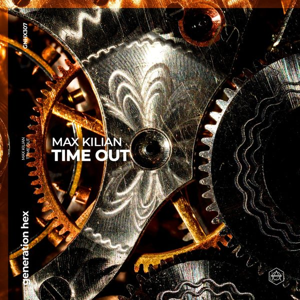

I 24 dischi
 1
No DifferentDJ ROSS, POUL
1
No DifferentDJ ROSS, POUL
 2
Acorda PedrinhoVolac
2
Acorda PedrinhoVolac
 3
All That You NeedDon Diablo
3
All That You NeedDon Diablo
 4
Get On The FunkKid Enigma, CASSIMM
4
Get On The FunkKid Enigma, CASSIMM
 5
Find A WayOFFAIAH
5
Find A WayOFFAIAH
 6
Run (Extended Mix)Sunnery James & Ryan Marciano
6
Run (Extended Mix)Sunnery James & Ryan Marciano
 7
High On That New Love (Extended Mix)Autograf feat. Tiina
7
High On That New Love (Extended Mix)Autograf feat. Tiina
 8
Paralyzed (Extended Mix)Carola & Gui2in feat. Jordan Grace
8
Paralyzed (Extended Mix)Carola & Gui2in feat. Jordan Grace
 9
Lick It (Extended Mix)Thomas Newson
9
Lick It (Extended Mix)Thomas Newson
 10
If It Ain't LoveLucas & Steve x 4 Strings
10
If It Ain't LoveLucas & Steve x 4 Strings
 11
CrankJames Hype
11
CrankJames Hype
 12
LiarSiwell
12
LiarSiwell

13 Time outMax killian 14
Let you goMaxomar
14
Let you goMaxomar
 15
FlavourBYOR
15
FlavourBYOR
 16
BabekDamien N-Drix & STV
16
BabekDamien N-Drix & STV
 17
Listen UpFirebeatz & Chocolate Puma
17
Listen UpFirebeatz & Chocolate Puma
 18
HeavenAurelios
18
HeavenAurelios
 19
I KnowBIJOU, MARTEN HØRGER
19
I KnowBIJOU, MARTEN HØRGER
 20
Bad Memories (Dj Vincenzino Bootleg Mix)Meduza, James Carter & Elley Duhé
20
Bad Memories (Dj Vincenzino Bootleg Mix)Meduza, James Carter & Elley Duhé
 21
Sete (Carlita Remix)BLOND.ISH, Amadou & Mariam, Francis
21
Sete (Carlita Remix)BLOND.ISH, Amadou & Mariam, Francis
 22
Mic Rock (Extended Mix)Barrientos, Josh Butler, Illyus
22
Mic Rock (Extended Mix)Barrientos, Josh Butler, Illyus
 23
Maria (Original Mix)Ibranovski
23
Maria (Original Mix)Ibranovski
 24
Toledo (Extended Mix)KEFFI
24
Toledo (Extended Mix)KEFFI
La tracklist
- 1 No Different DJ ROSS, POUL Bang Record
- 2 Acorda Pedrinho Volac Mix Feed Agency
- 3 All That You Need Don Diablo Hexagon
- 4 Get On The Funk Kid Enigma, CASSIMM Toolroom Records
- 5 Find A Way OFFAIAH Defected Records
- 6 Run (Extended Mix) Sunnery James & Ryan Marciano Armada Music
- 7 High On That New Love (Extended Mix) Autograf feat. Tiina Armada Music
- 8 Paralyzed (Extended Mix) Carola & Gui2in feat. Jordan Grace Armada Music
- 9 Lick It (Extended Mix) Thomas Newson Armada Music
- 10 If It Ain't Love Lucas & Steve x 4 Strings Spinnin' Records
- 11 Crank James Hype Tomorrowland Music
- 12 Liar Siwell Hexagon
- 13 Time out Max killian Hexagon
- 14 Let you go Maxomar Hexagon
- 15 Flavour BYOR Musical Freedom
- 16 Babek Damien N-Drix & STV Dharma
- 17 Listen Up Firebeatz & Chocolate Puma Musical Freedom
- 18 Heaven Aurelios Spinnin' Records
- 19 I Know BIJOU, MARTEN HØRGER Solotoko
- 20 Bad Memories (Dj Vincenzino Bootleg Mix) Meduza, James Carter & Elley Duhé Universal-Island Records
- 21 Sete (Carlita Remix) BLOND.ISH, Amadou & Mariam, Francis Insomniac Records
- 22 Mic Rock (Extended Mix) Barrientos, Josh Butler, Illyus Snatch! Records
- 23 Maria (Original Mix) Ibranovski Confession Records
- 24 Toledo (Extended Mix) KEFFI Toolroom Records